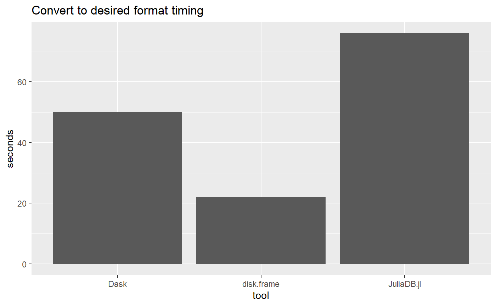
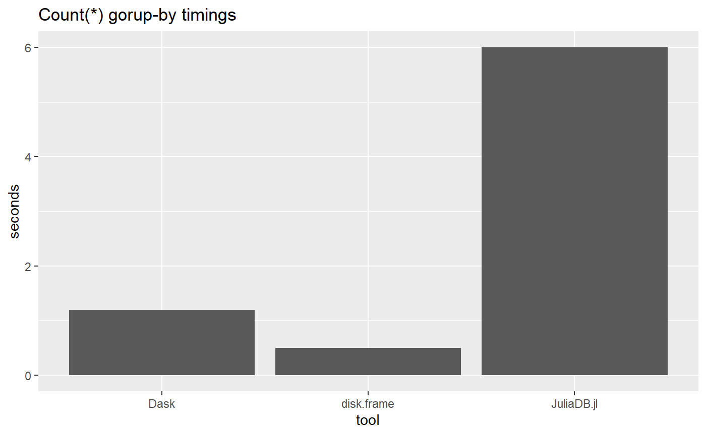

vs-dask-juliadb.RmdThis is the first in a series to benchmark the performance of disk.frame vs other medium-data tools. For Python, we will benchmkark Dask, and for Julia, we will benchmark JuliaDB.jl. In the process, I will do a warts-and-all account of the tools I have tested.
For this simple benchmark, disk.frame is faster. But Dask has a more convenient syntax. JuliaDB.jl is not ready for prime time.
Please note I have not tried to record the precise times over many runs, but I aim illustrate the magnitude of speed of the different packages
df = data.frame(
tool = c("disk.frame", "Dask", "JuliaDB.jl"),
timing = c(22, 50, 76)
)
library(ggplot2)
ggplot(df) +
geom_bar(aes(x = tool, weight = timing), stat = "count") +
ylab("seconds") +
ggtitle("Convert to desired format timing")
Next up is timings for the simple aggregation
df = data.frame(
tool = c("disk.frame", "Dask", "JuliaDB.jl"),
timing = c(0.5, 1.2, 6)
)
library(ggplot2)
ggplot(df) +
geom_bar(aes(x = tool, weight = timing), stat = "count") +
ylab("seconds") +
ggtitle("Count(*) gorup-by timings")
The data can be obtained from Rapids.ai’s Fannie Mae Data distribution page. I have downloaded the 17 Years data which contains dat on 37 million loans with over 1.89 billions rows in Performance datasets.
To download and the data, here are some examples
For Linux users
wget http://rapidsai-data.s3-website.us-east-2.amazonaws.com/notebook-mortgage-data/mortgage_2000-2016.tgz
tar xzvg mortgage_2000-2016.tgzFor Mac users
curl http://rapidsai-data.s3-website.us-east-2.amazonaws.com/notebook-mortgage-data/mortgage_2000-2016.tgz -o mortgage_2000-2016.tgz
tar xzvg mortgage_2000-2016.tgzFor Windows users, just download the file and extract the tgz file.
We find the largest possible single file to give each of the tool a test run.
First up is disk.frame
library(disk.frame)
#> Loading required package: dplyr
#>
#> Attaching package: 'dplyr'
#> The following objects are masked from 'package:stats':
#>
#> filter, lag
#> The following objects are masked from 'package:base':
#>
#> intersect, setdiff, setequal, union
#> Loading required package: purrr
#>
#> ## Message from disk.frame:
#> We have 1 workers to use with disk.frame.
#> To change that use setup_disk.frame(workers = n) or just setup_disk.frame() to use the defaults.
#>
#>
#> It is recommend that you run the following immediately to setup disk.frame with multiple workers in order to parallelize your operations:
#>
#>
#> ```r
#> # this willl set disk.frame with multiple workers
#> setup_disk.frame()
#> # this will allow unlimited amount of data to be passed from worker to worker
#> options(future.globals.maxSize = Inf)
#> ```
#>
#> Attaching package: 'disk.frame'
#> The following objects are masked from 'package:purrr':
#>
#> imap, imap_dfr, map, map_dfr, map2
#> The following objects are masked from 'package:base':
#>
#> colnames, ncol, nrow
system.time(setup_disk.frame()) # ~4s
#> The number of workers available for disk.frame is 6
#> user system elapsed
#> 0.00 0.03 3.56We note that there is some time needed for disk.frame to start up all the workers. Next we try to convert the largest CSV file to disk.frame format. The file to be converted is about 2.8GB in size
time_to_convert_disk.frame = system.time(df1 <- csv_to_disk.frame("c:/data/perf/Performance_2004Q3.txt", header = FALSE))[3]
time_to_convert_disk.frame
#> elapsed
#> 23.73Now that we have converted it, we want to a count by the first column. To achieve this we use a “two-stage” aggregation strategy. Note that use keep="V1" to bring only the column V1 into RAM. This avoids the reading of other unnecessary columns and should speed-up the analysis significantly
time_to_agg_disk.frame = system.time(summ <- df1[,.N, V1, keep = "V1"][, .(N = sum(N)), V1])
time_to_agg_disk.frame
#> user system elapsed
#> 0.08 0.04 3.33We can inspect the result as well.
summ
#> V1 N
#> 1: 4.940729e-313 111
#> 2: 4.940893e-313 95
#> 3: 4.941078e-313 133
#> 4: 4.941381e-313 115
#> 5: 4.941720e-313 75
#> ---
#> 389486: 4.940567e-312 17
#> 389487: 4.940569e-312 104
#> 389488: 4.940592e-312 97
#> 389489: 4.940607e-312 162
#> 389490: 4.940627e-312 15Another way to perform the analysis is to use dplyr syntax to perform a two-stage “group-by” which is:
df1 %>%
srckeep("V1") %>%
group_by(V1) %>%
summarise(N = n()) %>%
collect %>%
group_by(V1) %>%
summarise(N = sum(N)) %>% However, the dplyr syntax tends to be slightly slower than using data.table syntax.
To test Dask
import dask.dataframe as dd
from datetime import datetime
a = dd.read_csv("c:/data/perf/Performance_2004Q3.txt", sep="|",
dtype={7: 'double', 14: 'str', 15: 'str', 16:'str'}, header = None)
a.columns = ["var" + str(i) for i in range(31)]
a.head()
startTime = datetime.now()
a.to_parquet("c:/data/p03.parquet")
print(datetime.now() - startTime) # 50 secondsand we can see tht converting to Parquet takes more time than csv_to_disk.frame. Now to test Dask’s ability to aggregate a simple use-case, we can also load only column into RAM to speed up the analysis.
startTime = datetime.now()
a = dd.read_parquet("c:/data/p03.parquet", columns="var0")
aa = a.value_counts().compute()
print(datetime.now() - startTime) # 1.2The aggregation time is also longer, although in practice 1.2s. vs around 0.5s isn’t that big of a difference. We shall see how the differential changes when dealing with larger datasets in a future session.
A good feature of Dask is that you need not convert the data to parquet before doing the aggregation. This is a very convenient feature that is not available in disk.frame yet. For example:
startTime = datetime.now()
a = dd.read_csv("c:/data/perf/Performance_2004Q3.txt", sep="|",
dtype={7: 'double', 14: 'str', 15: 'str', 16:'str'}, header = None)
a.columns = ["var" + str(i) for i in range(31)]
startTime = datetime.now()
a.var0.value_counts().compute()
print(datetime.now() - startTime) # 50 secondsHowever this strategy is not particularly fast. In practice, you are almost always better off spending some time to convert your data to a efficient format before performing analysis. This may have a time cost, but the effort will pay off very quickly.
I really like Julia but it’s a shame that JuliaDB is no where near as mature as either disk.frame nor Dask for inputting data. I have not been able to load the CSV using JuliaDB’s native methods and have resorted to using CSV.jl to read the data and convert it to JuliaDB.jl. Also, it’s difficult to figure out how to run JuliaDB from disk, and the memory usage is enormous compared to the disk.frame’s and Dask’s.
using JuliaDB, CSV, OnlineStats
path = "c:/data/perf"
# read data using CSV.jl and convert to JuliaDB
@time df = CSV.File(joinpath(path, "Performance_2004Q3.txt"), delim = '|', header = false) |> JuliaDB.table # 48Once the data has been loaded, I can aggregate as follows
Unfortunately, it’s much slower than both disk.frame and Dask.
As a side note, I can use OnlineStats.jl to do aggregation (relatively) efficiently. I think OnlineStats is one of the bright spots for JuliaDB, as it has powerful online-algorithms that allows you to combine statistics by computing those statistics in chunks and combining the resutls from each chunk. It’s a shame that JuliaDB is not mature enough to make it shine more brightly. For an example of what it can do, see the example to compute the mean of Column6 grouped by Column1
You may have noticed that we have not converted JuliaDB.jl to disk. Here we will try that
Together with the time taken to read the data in (48s), we can say that the time to read and convert to the JuliaDB format is 48s + 28s = 76s. The issue with this conversion is that we are still not able to load only the column we need for the analysis. Random access to columns are possible with disk.frame and Dask.
Also, it’s astounding that the output file is 17GB in size and the original CSV was only 2.5GB! Loading the data takes about 9s, but uses up a lot of RAM. I think it will take time for JuliaDB to mature.
It is somewhat surprising that disk.frame is the speed king in this benchmark study, but I can’t take any of the credit as the speediness of disk.frame is due to the authors of fst, future (and parallel), and data.table. It’s also no surprise that Julia’s medium-data tool lags behind Python’s and R’s, because it’s a pattern noticed elsewhere in the data ecosystem. Julia’s niche and strength at this point is in computational problems that require lots of computation that do not necessarily invovled large amounts of input data (the Celeste project appears to be an exception but I think the computational demand there dominate the data demand).
Although disk.frame is the fastest, it’s syntax is not as convenient as Dask’s. Using Dask is almost the same as using pandas. In contrast, when using disk.frame, the user needs to be aware that operations happen in chunks, and hence a “two-stage” group-by is required. However, this will be addressed in a future planned package disk.frame.db which is will allow the user to “forget” the underlying architecture is made of chunks, and just focus on higher-level data operations.